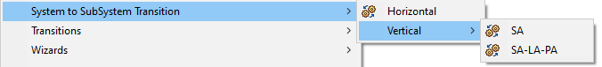
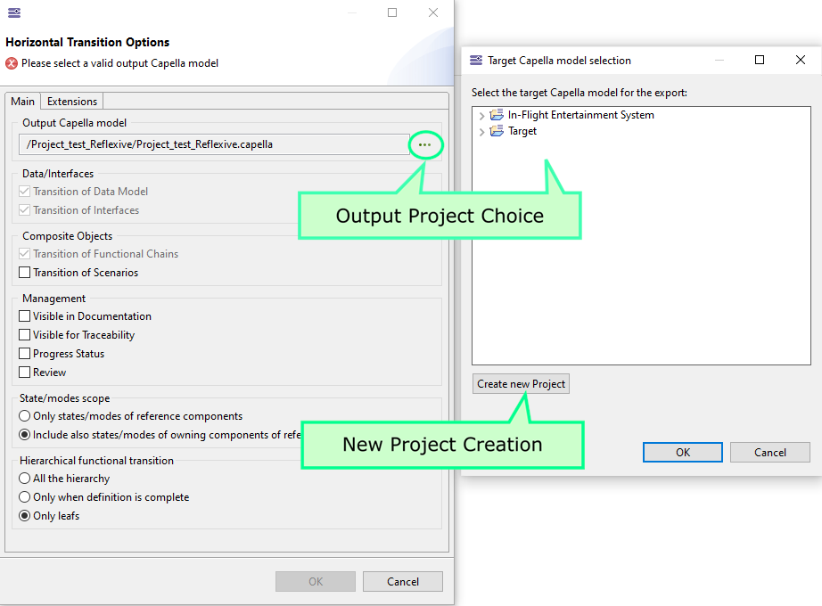
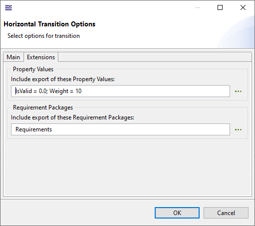
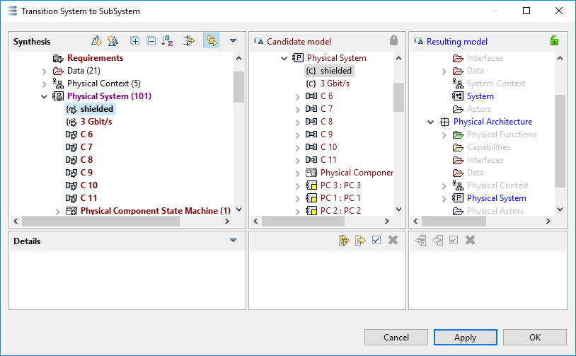
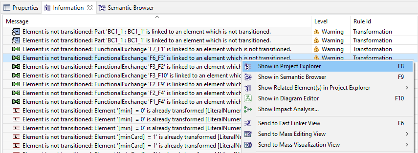
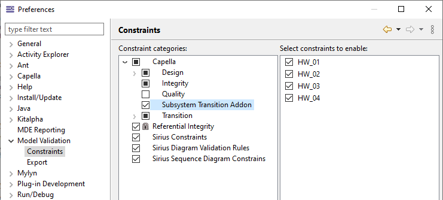

Transitions are possible from one or several logical, physical components or one Configuration Item. The Multiphase Transition is only available from one or more selected node physical components.

A configuration dialog opens with two tabs.
The "Main" tab allows, among others parameters, to choose the target model.

The "Extensions" tab allows to add elements to take in the transition:

Once the target project selected, a Diff/Merge dialog displays the the differences between the transformation result shown in the center and the target model shown on the right.
It is now possible to either selectively merge changes, or to merge all planned changes by pressing the "Apply" button.

Further information about the Diff/Merge tool can also be found in the Diff/Merge documentation (online documentation).
Once the transition performed, the Information view contains the listing of the actions performed. By right clicking on an action, the source and target object can be accessed:

The vertical transformation SA-LA-PA includes 4 validation rules that warn the user about inconsistent element allocations and deployments on target models. In general, these rules inspect the pre-allocation links generated by the multiphase transformation and crosscheck existing allocations and deployments against these pre-allocation links. A pre-allocation link is a kind of trace and thus filtered from the Capella Explorer by default. Each rule verifies a specific kind of allocation/deployment:
HW_01 - Logical Function Allocations
Checks if a Logical Function is allocated on the expected Logical Component.
HW_02 - Physical Component Deployment
Checks if a Behavioral Physical Component is deployed in the expected Node Physical Component.
HW_03 - Logical Functional Exchange Allocations
Checks if a Logical Functional Exchange is allocated on the expected Component Exchange.
HW_04 - Physical Component Exchange Allocations
Checks if a Physical Component Exchange is allocated on the expected Physical Link.
The validation rules can be enabled/disabled selectively by selecting Window->Preferences->Model Validation->Constraints. The multiphase transition rules can then be found under Capella->Subsystem Transition Addon:

To launch a validation, select a suitable model element (e.g. SystemEngineering) and choose Validate Model from its context menu.
When a functional chain in the System model is involving functions that are not directly linked to the selected subsystem components, the addon will try to ensure that chain remains valid on the subsystem. It will create some Functional Exchange replacing irrelevant functions to ensure chain is still involving the same chain of relevant involved functions.
Subsystem will be named based on the selected Component (or Configuration item according to the subsystem transition kind). When subsystem is resulting from several Components, the subsystem will use default name.